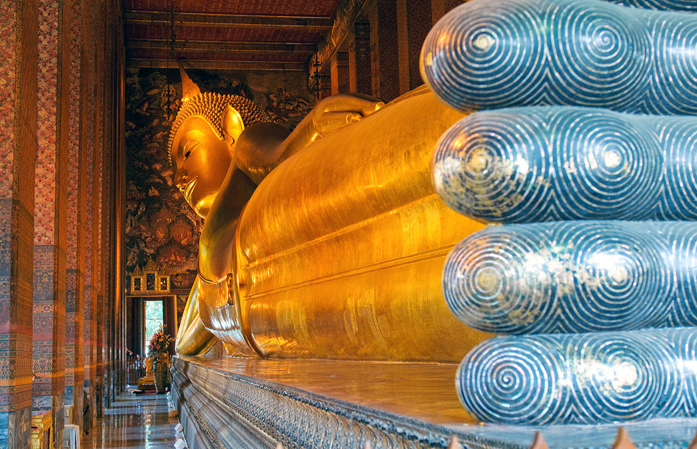

2 วัดโพธิ์
วัดโพธิ์ มีชื่อเรียกอีกชื่อหนึ่งว่าวัดพระเชตุพนวิมลมังคลารามราชวรมหาวิหาร มีพระพุทธไสยาสน์ (พระนอนวัดโพธิ์) ลงรักปิดทองยาว 46 เมตร วัดโพธิ์ยังขึ้นชื่อเรื่องการนวดแผนไทย และเป็นที่ตั้งของ โรงเรียนแพทย์แผนโบราณวัดพระเชตุพนฯ ผู้ที่เดินทางไปชมวัดสามารถรับบริการนวดแผไทยในบริเวณวัดได้อีกด้วย